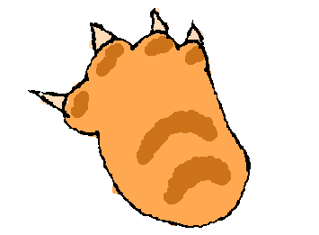

raise your hand. Explore My Pawsona under your own paw.???
● webcam loading...
welcome.
no humans allowed.
???
▼ paw
draw yourself as a cat.
 pen
pen
 eraser
eraser
 fill
fill
???
▼ paw
wave to pet yourself.
wave your paw.
near a cat to pet it
???
▼ paw
give yourself entertainment.
 yarn
yarn
 food
food
 butterfly
butterfly
???
▼ paw
do not leave yourself alone.
@#$%!
*&@!!
!#@$
%@#!
???
▼ paw
visit the shelter.
 the clowder.
other pawsonas live here
the clowder.
other pawsonas live here
???
▼ click to sign
connecting...